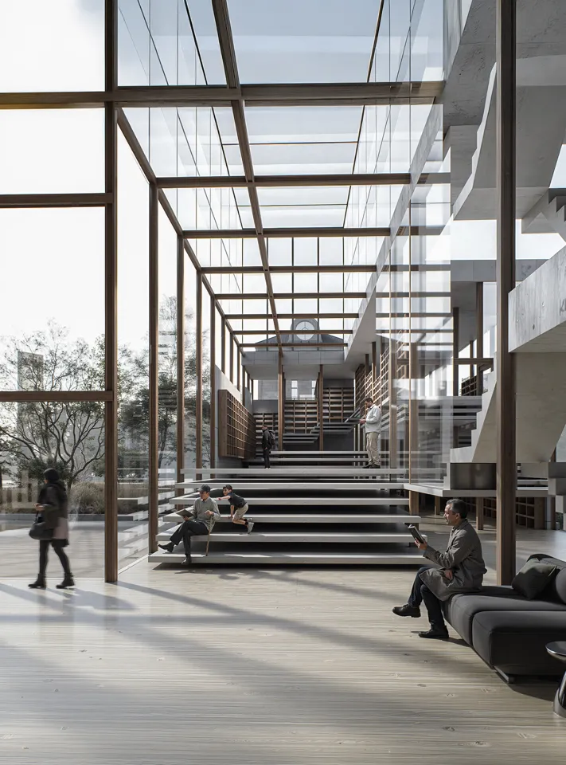
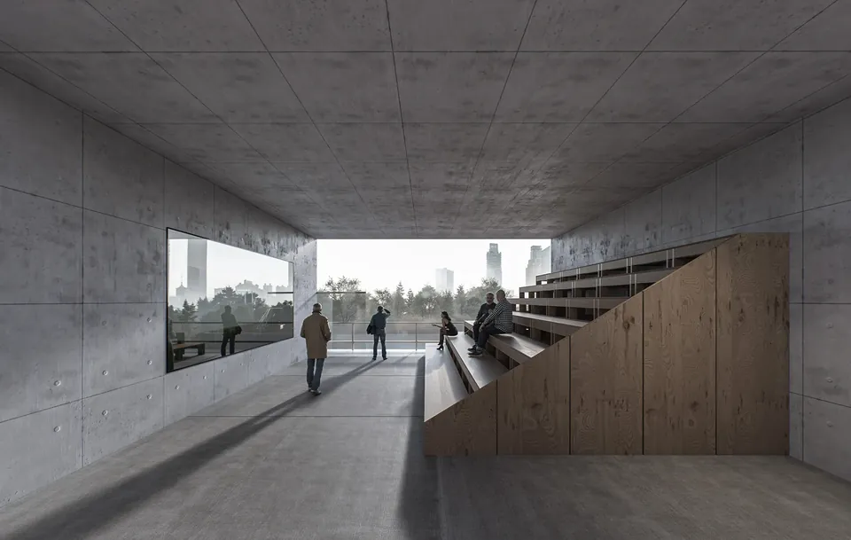
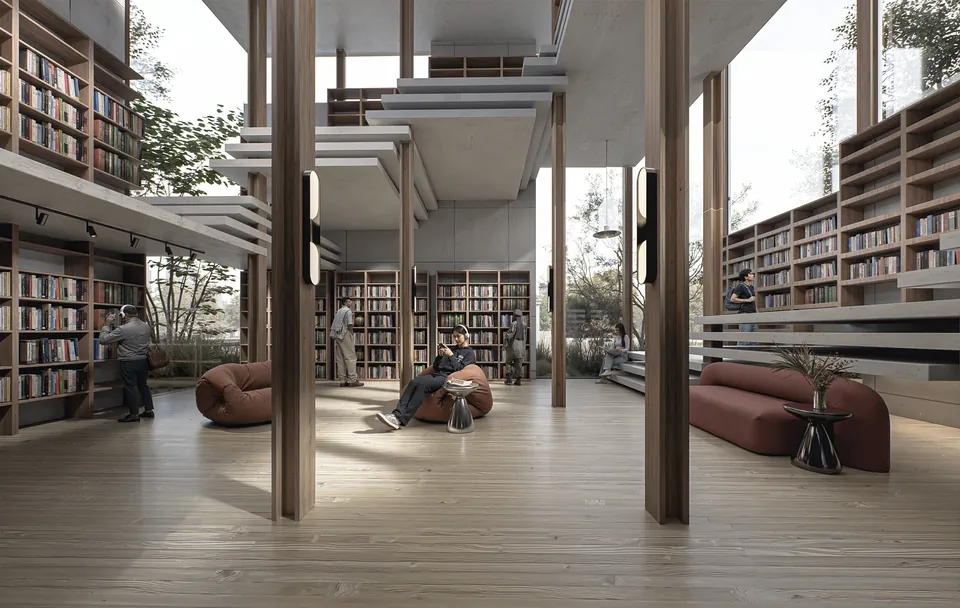

個人學術設計案例 02 / 05
角落圖書館
Corner Library
找一個角落，安心停下來。

01作品背後
設計策略
人在尺度適中、有包覆感的「角落」裡，比在空間中央更容易專注與停留。設計以座位塔與桁架系統，把結構、書架與座位整合成可行走、可乘坐、可停留的閱讀系統，讓使用者依自身狀態選擇高度與距離。
與研究的關聯
光線、包覆感與尺度的細微差異，就能改變人對一個場所的感受。
- 年份
- 2020
- 地點
- 台南 · 國華街與正興街口
- 角色
- 個人設計（唯一設計者）
- 面積
- 220 m²
- 背景
- 大三期末設計 · 崑山科技大學 空間設計系
▲ 作品歸屬
本作品為創辦人個人學術設計，並非 RSA 承攬或完成之專案，亦未宣稱使用 RSA 進行環境分析。圖片為設計模擬圖，非落成實景。
02設計視角設計模擬圖




